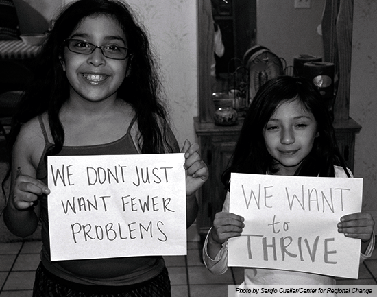
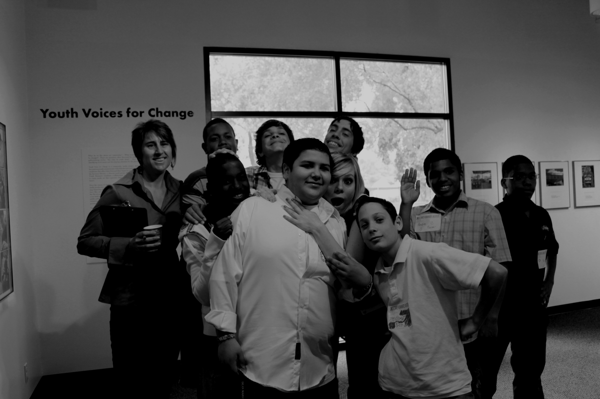

About
Putting Youth on the Map (PYOM) is a powerful information resource for youth and adults working to ensure youth well-being in California.
Who can use this?
- Youth and adult advocates can use PYOM to identify issues, mobilize action and hold decision-makers accountable for helping improve young people’s opportunities and outcomes.
- Service providers and private foundations can use PYOM to strategically allocate resources.
- Public agencies and policy-makers can use PYOM to focus funding, personnel, and regulation in ways that increase youth well-being, channel public resources fairly, and promote accountability.
- Everyone can use PYOM to identify leverage points for improving opportunity, develop multi-sector multi-issue collaborations, and hold themselves accountable for collectively improving conditions.
What can you do?
- See holistic place-based indices measuring youth well-being and severe isolation from support
- View index analyses by sex and race/ethnicity
- Explore data maps on income adequacy, suspension/truancy, transportation access, young adult voting and more
- Print maps and download data
- Find curricula and examples to help youth and community advocates use data maps
- Link to participatory mapping tools and other youth data sites


To see site partners and sponsors and contact us, click these items in the dropdown menu or scroll down.
Partners
To develop this website, Nancy Erbstein (Assistant Research Professor, UC Davis Department of Human Ecology) led a team including:
UC Davis Center for Regional Change Staff
- Valerie Chiappone (Admiistrative Support)
- Sergio Cuellar (Outreach, Curriculum Development and Training)
- Diane Godard (Data Support)
- Teri Greenfield (GIS and Website Development)
- Cassie Hartzog (Index Development and Data Analysis)
- Mindy Romero (Youth Vote data collection and analyses)
- Sara Watterson (GIS and Website Development)
- Krystyna von Henneberg (Website Development)
UC Davis Faculty
- Estella Geraghty, Associate Professor, UC Davis Medical Center Department of Internal Medicine (Index Development and GIS)
- Jonathan London, Assistant Professor, UC Davis Department of Human Ecology (Center for Regional Change Director)
UC Davis Students
- Hyeyeung Cho (Data Collection)
- Beth Hart (Outreach)
- Yohei Kato (Design and Outreach)
- Irvis Orozco (Outreach, Beta Testing)
- Shrayas Jatkar (Outreach, Training)
- Meghan Jordan (Website Design)
- Bidita Tithi (Outreach)
Thanks also to students who attended beta testing sessions and students in Chicano Studies 132 (Professor Gloria Rodriguez) who provided feedback on the website.
UC Division of Agriculture and Natural Resources Affiliates
- David Ginsburg (initial website design)
- Charles Go (initial website design)
- Russell Hill (initial website design, ANR outreach)
- Anna Martin (initial website design, ANR outreach)
- Fe Moncloa (initial website design)
- Terri Spezzano (initial website design, ANR outreach)
- Constance Schneider (initial website design, ANR outreach)
- Steven Worker/4-H Youth Technology Leadership Team (initial website design)
- Dennis Carrasquilla (logo design)
and Partners:
Contact Us